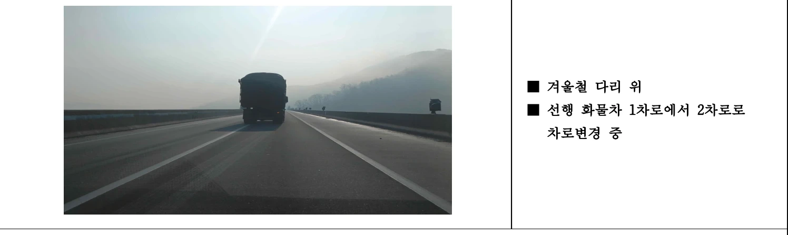

714. Hai cách lái xe nào là an toàn nhất trong tình huống sau?

- ①Lái xe chú ý lớp băng mỏng đóng trên mặt đường vào mùa đông.
- ②Đường không có nhiều xe nên có thể đỗ xe.
- ③Có thể đổi làn đường và đi tiếp.
- ④Không được vượt khi đi trên cầu.
- ⑤Lái xe sát phía sau xe chở hàng để cảnh báo xe chở hàng chú ý khi chuyển làn.
Xem đáp án
Đáp án
① Lái xe chú ý lớp băng mỏng đóng trên mặt đường vào mùa đông.
④ Không được vượt khi đi trên cầu.
Căn cứ
Người điều khiển các loại phương tiện đều bị cấm vượt xe khác trên cầu (Điều 22, Khoản 3, Khoản 3 Luật Giao thông đường bộ). Người điều khiển mọi phương tiện không được đỗ xe trong hầm, trên cầu. (Luật Giao thông đường bộ, Điều 33, Khoản 1)
Phần căn cứ là bản dịch máy để tham khảo.